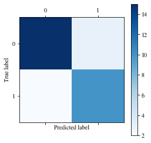

import numpy as np
class Perceptron(object):
"""
Perceptron classifier.
Parameter
---------
eta: float
Learning rate(between 0.0 and 1.0)
n_iter: int
passes over the dataset
Attribute
---------
w_: 1d array
Weights after fitting
errors_: list
Number of misclassifications in each epoch. 1个epoch相当于过了1遍训练集中的所有样本
"""
def __init__(self,eta=0.01, n_iter=10):
self.eta = eta
self.n_iter = n_iter ## the number of epoch
def fit(self, X,y):
"""Fitting training data.
Parameters
----------
X: {array-like}, shape = [n_samples, n_features]
y: {array-like}, shape = [n_samples,], Target values
Return
self: object
"""
self.w_ = np.zeros(1 + X.shape[1]) # 权重初始值设为0
self.errors_ = []
for _ in range(self.n_iter):
errors = 0
for xi,target in zip(X,y):
update = self.eta * (target - self.predict(xi))
self.w_[1:] += update * xi
self.w_[0] += update
errors += int(update != 0.0)
self.errors_.append(errors)
return self
def net_input(self,X):
"""Calculate net input w*x"""
return np.dot(X, self.w_[1:]) + self.w_[0]
def predict(self,X):
"""return class label"""
return np.where(self.net_input(X)>=0.0, 1, -1)
## ex1_2 载入鸢尾花数据集
import pandas as pd
import numpy as np
import os
import matplotlib.pyplot as plt
os.chdir(r"C:\Users\43790\data file")
##数据读取
df = pd.read_csv("iris.csv") ## 花萼和花瓣
df.head()
##将数据可视化 ，选择setosa和versicolor两种
# select setosa and versicolor
X = df.iloc[:100,[0,2]].values
y = df.iloc[:100,4].values
y = np.where(y=='setosa',-1,1) ## 标签转换为-1,1
##plot data
plt.scatter(X[:50,0],X[:50,1], color='red',marker='o',label='setosa')
plt.scatter(X[50:,0],X[50:,1], color='blue',marker='x',label='versicolor')
plt.xlabel('petal length [cm]')
plt.ylabel('sepal length [cm]')
plt.legend(loc='upper left')
plt.tight_layout()
##ex1_3 拟合训练集X
ppn = Perceptron(eta=0.1, n_iter=10)
ppn.fit(X, y)
ppn.errors_
##可视化观察是否收敛
plt.plot(range(1, len(ppn.errors_) + 1), ppn.errors_, marker='o')
plt.xlabel('Epochs')
plt.ylabel('Number of misclassifications')
plt.tight_layout()
from matplotlib.colors import ListedColormap
# Colormap object generated from a list of colors. 画决策边界
def plot_decision_regions(X, y, classifier, resolution=0.02):
# setup marker generator and color map
markers = ('s', 'x', 'o', '^', 'v')
colors = ('red', 'blue', 'lightgreen', 'gray', 'cyan')
cmap = ListedColormap(colors[:len(np.unique(y))])
# plot the decision surface 确定横纵轴边界
x1_min, x1_max = X[:, 0].min() - 1, X[:, 0].max() + 1 # 最小-1, 最大+1
x2_min, x2_max = X[:, 1].min() - 1, X[:, 1].max() + 1
# create a pair of grid arrays
# flatten the grid arrays then predict
xx1, xx2 = np.meshgrid(np.arange(x1_min, x1_max, resolution),
np.arange(x2_min, x2_max, resolution))
Z = classifier.predict(np.array([xx1.ravel(), xx2.ravel()]).T)
Z = Z.reshape(xx1.shape)
# maps the different decision regions to different colors
plt.contourf(xx1, xx2, Z, alpha=0.4, cmap=cmap)
plt.xlim(xx1.min(), xx1.max())
plt.ylim(xx2.min(), xx2.max())
# plot class samples
for idx, cl in enumerate(np.unique(y)):
plt.scatter(x=X[y == cl, 0], y=X[y == cl, 1],
alpha=0.8, c=cmap(idx),
marker=markers[idx], label=cl)
plot_decision_regions(X, y, classifier=ppn)
plt.xlabel('sepal length [cm]')
plt.ylabel('petal length [cm]')
plt.legend(loc='upper left')
plt.tight_layout()
'c' argument looks like a single numeric RGB or RGBA sequence, which should be avoided as value-mapping will have precedence in case its length matches with 'x' & 'y'. Please use a 2-D array with a single row if you really want to specify the same RGB or RGBA value for all points.
'c' argument looks like a single numeric RGB or RGBA sequence, which should be avoided as value-mapping will have precedence in case its length matches with 'x' & 'y'. Please use a 2-D array with a single row if you really want to specify the same RGB or RGBA value for all points.#7_5
class AdalineGD(object):
"""Adaptive Linear Neuron Classifier
Parameters
----------
eta: float
Learning rate(between 0.0 and 1.0)
n_iter: int
Passing over the training dataset
Attributes
----------
w_: 1d-array
Weights after fitting
errors_: list
Number of misclssification in every epoch
"""
def __init__(self, eta=0.01, n_iter=50):
self.eta = eta
self.n_iter = n_iter
def fit(self, X, y):
""" Fit training data.
Parameters
----------
X : {array-like}, shape = [n_samples, n_features]
Training vectors, where n_samples is the number of samples and
n_features is the number of features.
y : array-like, shape = [n_samples]
Target values.
Returns
-------
self : object
"""
self.w_ = np.zeros(1 + X.shape[1])
self.cost_ = []
## gradient descent
for i in range(self.n_iter):
output = self.net_input(X)
errors = (y - output)
self.w_[1:] += self.eta * X.T.dot(errors)
self.w_[0] += self.eta * errors.sum()
cost = (errors**2).sum() / 2.0
self.cost_ .append(cost)
return self
def net_input(self, X):
"""Calculate net input"""
return np.dot(X, self.w_[1:]) + self.w_[0]
def activation(self, X):
return self.net_input(X)
def predict(self, X):
"""return class label"""
return np.where(self.activation(X) >= 0.0, 1, -1)
# 测试两种 learning rate, 0.01 和 0.0001
fig, ax = plt.subplots(nrows=1, ncols=2, figsize=(8, 4))
ada1 = AdalineGD(n_iter=10, eta=0.01).fit(X, y)
ax[0].plot(range(1, len(ada1.cost_) + 1), np.log10(ada1.cost_), marker='o')
ax[0].set_xlabel('Epochs')
ax[0].set_ylabel('log(Sum-squared-error)')
ax[0].set_title('Adaline - Learning rate 0.01')
ada2 = AdalineGD(n_iter=10, eta=0.0001).fit(X, y)
ax[1].plot(range(1, len(ada2.cost_) + 1), ada2.cost_, marker='o')
ax[1].set_xlabel('Epochs')
ax[1].set_ylabel('Sum-squared-error')
ax[1].set_title('Adaline - Learning rate 0.0001')
plt.tight_layout()
# plt.savefig('./adaline_1.png', dpi=300)
#7_10
## ex7_11 LogisticRegression实现
class LogisticRegression(object):
"""LogisticRegression classifier.
Parameters
----------
eta: float
Learning rate(between 0.0 and 1.0)
n_iter: int
Passing over the training dataset.
Attributes
----------
w_: 1d-array
Weight after fitting.
cost_: list
Cost in every epoch.
"""
def __init__(self, eta=0.01, n_iter=50):
self.eta = eta
self.n_iter = n_iter
def fit(self, X, y):
self.w_ = np.zeros(1 + X.shape[1])
self.cost_ = []
for i in range(self.n_iter):
y_val = self.activation(X)
errors = (y - y_val)
neg_grad = X.T.dot(errors)
self.w_[1:] += self.eta * neg_grad
self.w_[0] += self.eta * errors.sum()
self.cost_.append(self._logit_cost(y, self.activation(X)))
return self
def _logit_cost(self, y, y_val):
logit = -y.dot(np.log(y_val)) - ((1 - y).dot(np.log(1 - y_val)))
return logit
def _sigmoid(self, z):
return 1.0 / (1.0 + np.exp(-z))
def net_input(self, X):
return np.dot(X, self.w_[1:]) + self.w_[0]
def activation(self, X):
z = self.net_input(X)
return self._sigmoid(z)
def predict_proba(self, X):
return self.activation(X)
def predict(self, X):
return np.where(self.activation(X)>0.5, 1, 0)
#7_11
y[y==-1] = 0
X_std = (X - X.mean()) / X.std()
lr = LogisticRegression(n_iter=500, eta=0.02).fit(X_std, y)
import matplotlib.pyplot as plt
plt.plot(range(1,len(lr.cost_) + 1), np.log10(lr.cost_))
plt.xlabel('Epochs')
plt.ylabel('Cost')
plt.title('Logistic Regression - Learning rate 0.02')
plt.tight_layout()
## 1）导入
from sklearn import datasets
import numpy as np
iris = datasets.load_iris()
X = iris.data[:,[2,3]] ##分别代表花瓣的长和宽
y = iris.target ## 已转换为整数标签
print(np.unique(y))
print(iris.target_names) #0=Iris-Setosa, 1=Iris-Versicolor, 2=Iris-Virginica
#拆分数据集
from sklearn.model_selection import train_test_split
# stratify=y, 使训练集和测试集的分类标签比例相同
X_train, X_test, y_train, y_test = train_test_split(X, y, test_size=0.3, random_state=1, stratify=y)
print(np.bincount(y))
print(np.bincount(y_train))
from sklearn.preprocessing import StandardScaler
#标准化
sc = StandardScaler()
sc.fit(X_train)
X_train_std = sc.transform(X_train)
X_test_std = sc.transform(X_test)
[0 1 2]
['setosa' 'versicolor' 'virginica']
[50 50 50]
[35 35 35]from sklearn.linear_model import Perceptron
# sklearn 中有封装好的 Perceptron 函数
ppn = Perceptron(n_iter_no_change=40, eta0=0.1, random_state=1)
ppn.fit(X_train_std, y_train)
y_pred = ppn.predict(X_test_std) # predict
print('Misclassified samples: %d' % (y_test != y_pred).sum()) # 错误个数
from sklearn.metrics import accuracy_score
print('Accuracy: %.2f' % accuracy_score(y_test, y_pred)) # 91% 的准确率
Misclassified samples: 8
Accuracy: 0.82## ex8_3 重新定义画决策边界函数, 使得能区分训练数据和测试数据
from matplotlib.colors import ListedColormap
import matplotlib.pyplot as plt
%matplotlib inline
# 重新定义画决策边界函数, 使得能区分训练数据和测试数据
def plot_decision_regions(X, y, classifier, test_idx=None, resolution=0.02):
# setup marker generator and color map
markers = ('s', 'x', 'o', '^', 'v')
colors = ('red', 'blue', 'lightgreen', 'gray', 'cyan')
cmap = ListedColormap(colors[:len(np.unique(y))])
# plot the decision surface
x1_min, x1_max = X[:, 0].min() - 1, X[:, 0].max() + 1
x2_min, x2_max = X[:, 1].min() - 1, X[:, 1].max() + 1
xx1, xx2 = np.meshgrid(np.arange(x1_min, x1_max, resolution),
np.arange(x2_min, x2_max, resolution))
Z = classifier.predict(np.array([xx1.ravel(), xx2.ravel()]).T)
Z = Z.reshape(xx1.shape)
plt.contourf(xx1, xx2, Z, alpha=0.3, cmap=cmap)
plt.xlim(xx1.min(), xx1.max())
plt.ylim(xx2.min(), xx2.max())
# plot all samples
for idx, cl in enumerate(np.unique(y)):
plt.scatter(x=X[y == cl, 0], y=X[y == cl, 1],
alpha=0.8, c=colors[idx],
marker=markers[idx], label=cl,
edgecolor='black')
# highlight test samples
if test_idx:
X_test, y_test = X[test_idx, :], y[test_idx]
plt.scatter(X_test[:, 0], X_test[:, 1], c='cyan',
alpha=0.2, linewidth=1, marker='o',
s=100, label='test set')
X_combined_std = np.vstack((X_train_std, X_test_std))
y_combined = np.hstack((y_train, y_test))
## ex8_4 LogisticRegression建模
from sklearn.linear_model import LogisticRegression
# C parameter 是什么呢?
lr = LogisticRegression(C=100.0, random_state=1)
lr.fit(X_train_std, y_train)
lr.predict_proba(X_test_std[:5, :]) ## 每行对应三种花类的概率
lr.predict_proba(X_test_std[:5, :]).argmax(axis=1)
C:\Users\43790\Anaconda3\lib\site-packages\sklearn\linear_model\logistic.py:432: FutureWarning: Default solver will be changed to 'lbfgs' in 0.22. Specify a solver to silence this warning.
FutureWarning)
C:\Users\43790\Anaconda3\lib\site-packages\sklearn\linear_model\logistic.py:469: FutureWarning: Default multi_class will be changed to 'auto' in 0.22. Specify the multi_class option to silence this warning.
"this warning.", FutureWarning)
array([2, 0, 0, 1, 1], dtype=int64)## ex8_5 正则路径分析
import matplotlib
import matplotlib.pyplot as plt
weights, params = [], []
lr = LogisticRegression(C=10.**2, random_state=1)
lr.fit(X_train_std, y_train)
for c in np.arange(-5, 5):
lr = LogisticRegression(C=10.**c, random_state=1)
lr.fit(X_train_std, y_train)
weights.append(lr.coef_[1])
params.append(10.**c)
weights = np.array(weights)
plt.plot(params, weights[:,0], label='petal length')
plt.plot(params, weights[:,1],linestyle='--', label='petal width')
plt.ylabel('weight coefficient')
plt.xlabel('C')
plt.legend(loc='upper left')
plt.xscale('log')
matplotlib.rcParams.update(
{
'text.usetex': False,
'font.family': 'stixgeneral',
'mathtext.fontset': 'stix',
}
)
plt.show()
C:\Users\43790\Anaconda3\lib\site-packages\sklearn\linear_model\logistic.py:432: FutureWarning: Default solver will be changed to 'lbfgs' in 0.22. Specify a solver to silence this warning.
FutureWarning)
C:\Users\43790\Anaconda3\lib\site-packages\sklearn\linear_model\logistic.py:469: FutureWarning: Default multi_class will be changed to 'auto' in 0.22. Specify the multi_class option to silence this warning.
"this warning.", FutureWarning)
C:\Users\43790\Anaconda3\lib\site-packages\sklearn\linear_model\logistic.py:432: FutureWarning: Default solver will be changed to 'lbfgs' in 0.22. Specify a solver to silence this warning.
FutureWarning)
C:\Users\43790\Anaconda3\lib\site-packages\sklearn\linear_model\logistic.py:469: FutureWarning: Default multi_class will be changed to 'auto' in 0.22. Specify the multi_class option to silence this warning.
"this warning.", FutureWarning)
C:\Users\43790\Anaconda3\lib\site-packages\sklearn\linear_model\logistic.py:432: FutureWarning: Default solver will be changed to 'lbfgs' in 0.22. Specify a solver to silence this warning.
FutureWarning)
C:\Users\43790\Anaconda3\lib\site-packages\sklearn\linear_model\logistic.py:469: FutureWarning: Default multi_class will be changed to 'auto' in 0.22. Specify the multi_class option to silence this warning.
"this warning.", FutureWarning)
C:\Users\43790\Anaconda3\lib\site-packages\sklearn\linear_model\logistic.py:432: FutureWarning: Default solver will be changed to 'lbfgs' in 0.22. Specify a solver to silence this warning.
FutureWarning)
C:\Users\43790\Anaconda3\lib\site-packages\sklearn\linear_model\logistic.py:469: FutureWarning: Default multi_class will be changed to 'auto' in 0.22. Specify the multi_class option to silence this warning.
"this warning.", FutureWarning)
C:\Users\43790\Anaconda3\lib\site-packages\sklearn\linear_model\logistic.py:432: FutureWarning: Default solver will be changed to 'lbfgs' in 0.22. Specify a solver to silence this warning.
FutureWarning)
C:\Users\43790\Anaconda3\lib\site-packages\sklearn\linear_model\logistic.py:469: FutureWarning: Default multi_class will be changed to 'auto' in 0.22. Specify the multi_class option to silence this warning.
"this warning.", FutureWarning)
C:\Users\43790\Anaconda3\lib\site-packages\sklearn\linear_model\logistic.py:432: FutureWarning: Default solver will be changed to 'lbfgs' in 0.22. Specify a solver to silence this warning.
FutureWarning)
C:\Users\43790\Anaconda3\lib\site-packages\sklearn\linear_model\logistic.py:469: FutureWarning: Default multi_class will be changed to 'auto' in 0.22. Specify the multi_class option to silence this warning.
"this warning.", FutureWarning)
C:\Users\43790\Anaconda3\lib\site-packages\sklearn\linear_model\logistic.py:432: FutureWarning: Default solver will be changed to 'lbfgs' in 0.22. Specify a solver to silence this warning.
FutureWarning)
C:\Users\43790\Anaconda3\lib\site-packages\sklearn\linear_model\logistic.py:469: FutureWarning: Default multi_class will be changed to 'auto' in 0.22. Specify the multi_class option to silence this warning.
"this warning.", FutureWarning)
C:\Users\43790\Anaconda3\lib\site-packages\sklearn\linear_model\logistic.py:432: FutureWarning: Default solver will be changed to 'lbfgs' in 0.22. Specify a solver to silence this warning.
FutureWarning)
C:\Users\43790\Anaconda3\lib\site-packages\sklearn\linear_model\logistic.py:469: FutureWarning: Default multi_class will be changed to 'auto' in 0.22. Specify the multi_class option to silence this warning.
"this warning.", FutureWarning)
C:\Users\43790\Anaconda3\lib\site-packages\sklearn\linear_model\logistic.py:432: FutureWarning: Default solver will be changed to 'lbfgs' in 0.22. Specify a solver to silence this warning.
FutureWarning)
C:\Users\43790\Anaconda3\lib\site-packages\sklearn\linear_model\logistic.py:469: FutureWarning: Default multi_class will be changed to 'auto' in 0.22. Specify the multi_class option to silence this warning.
"this warning.", FutureWarning)
C:\Users\43790\Anaconda3\lib\site-packages\sklearn\linear_model\logistic.py:432: FutureWarning: Default solver will be changed to 'lbfgs' in 0.22. Specify a solver to silence this warning.
FutureWarning)
C:\Users\43790\Anaconda3\lib\site-packages\sklearn\linear_model\logistic.py:469: FutureWarning: Default multi_class will be changed to 'auto' in 0.22. Specify the multi_class option to silence this warning.
"this warning.", FutureWarning)
C:\Users\43790\Anaconda3\lib\site-packages\sklearn\linear_model\logistic.py:432: FutureWarning: Default solver will be changed to 'lbfgs' in 0.22. Specify a solver to silence this warning.
FutureWarning)
C:\Users\43790\Anaconda3\lib\site-packages\sklearn\linear_model\logistic.py:469: FutureWarning: Default multi_class will be changed to 'auto' in 0.22. Specify the multi_class option to silence this warning.
"this warning.", FutureWarning)# ex8_6 在iris数据集上训练一个支持向量机模型
from sklearn.svm import SVC
svm = SVC(kernel='linear', C=1.0, random_state=0)
svm.fit(X_train_std, y_train)
plot_decision_regions(X_combined_std, y_combined,
classifier=svm, test_idx=range(105,150))
plt.xlabel('petal length [standardized]')
plt.ylabel('petal width [standardized]')
plt.legend(loc='upper left')
plt.tight_layout()
#8_10 分类指标accuracy
# 构建指标
from sklearn import datasets
from sklearn.model_selection import train_test_split
from sklearn.preprocessing import StandardScaler
from sklearn.svm import SVC
X,y = datasets.make_classification(n_classes=2,random_state=0)
X_train,X_test,y_train,y_test=train_test_split(X,y,test_size=0.3,random_state=0)
sc = StandardScaler()
sc.fit(X_train)
X_train_std = sc.fit_transform(X_train)
X_test_std = sc.transform(X_test)
model = SVC(probability= True,random_state=0)
model.fit(X_train_std,y_train)
print(model.score(X_test_std,y_test))
from sklearn.metrics import accuracy_score
y_pred = model.predict(X_test_std)
print(accuracy_score(y_test,y_pred))0.8333333333333334
0.8333333333333334# 8_11 混淆矩阵
from sklearn.metrics import confusion_matrix
y_test_pred = model.predict(X_test_std)
confmat = confusion_matrix(y_test,y_test_pred)
print(confmat)
plt.matshow(confusion_matrix(y_test,y_test_pred),cmap=plt.cm.Blues)
plt.colorbar()
plt.xlabel("Predicted label")
plt.ylabel("True label")[[15 3]
[ 2 10]]
Text(0, 0.5, 'True label')
import matplotlib
import matplotlib.pyplot as plt
from sklearn.metrics import confusion_matrix
#7、6、6
y_test = ['pos','neg','pos','ind','neg','pos','ind','neg','pos','neg',
'ind','pos','neg','ind','pos','neg','ind','pos','neg','pos',
'ind','ind','ind','neg','pos','neg','ind','pos','neg','ind']
y_test_pred = ['pos', 'neg', 'pos', 'ind', 'ind', 'pos', 'ind', 'ind', 'ind' ,'neg',
'ind', 'pos', 'pos', 'pos', 'neg', 'neg', 'ind', 'ind', 'neg', 'pos',
'neg', 'neg', 'neg', 'pos', 'pos', 'neg', 'ind', 'pos','neg','ind']
confmat = confusion_matrix(y_test,y_test_pred)
print(confmat)
plt.matshow(confusion_matrix(y_test,y_test_pred),cmap=plt.cm.Blues)
plt.colorbar()
plt.xlabel("Predicted label")
plt.ylabel("True label")[[6 3 1]
[2 6 2]
[2 1 7]]
Text(0, 0.5, 'True label')## ex8_12 精确率、召回率和调和值
from sklearn.metrics import precision_score, recall_score, f1_score, fbeta_score
print('Precision: %.3f' % precision_score(y_true=y_test, y_pred=y_test_pred))
print('Recall: %.3f' % recall_score(y_true=y_test, y_pred=y_test_pred))
print('F1: %.3f' % f1_score(y_true=y_test, y_pred=y_test_pred))
print('F_beta2: %.3f' % fbeta_score(y_true=y_test, y_pred=y_test_pred, beta=2))
from sklearn.metrics import classification_report
print(classification_report(y_test, y_test_pred))
Precision: 0.769
Recall: 0.833
F1: 0.800
F_beta2: 0.820
precision recall f1-score support
0 0.88 0.83 0.86 18
1 0.77 0.83 0.80 12
accuracy 0.83 30
macro avg 0.83 0.83 0.83 30
weighted avg 0.84 0.83 0.83 30
#8_13
import numpy as np
import matplotlib.pyplot as plt
from itertools import cycle
from sklearn import svm, datasets
from sklearn.metrics import roc_curve, auc
from sklearn.model_selection import train_test_split
from sklearn.preprocessing import label_binarize
from sklearn.multiclass import OneVsRestClassifier
from scipy import interp
from sklearn.metrics import roc_auc_score
# Import some data to play with
iris = datasets.load_iris()
X = iris.data
y = iris.target
# Binarize the output
y = label_binarize(y, classes=[0, 1, 2])
n_classes = y.shape[1]
# Add noisy features to make the problem harder
random_state = np.random.RandomState(0)
n_samples, n_features = X.shape
X = np.c_[X, random_state.randn(n_samples, 200 * n_features)]
# shuffle and split training and test sets
X_train, X_test, y_train, y_test = train_test_split(X, y, test_size=.5,
random_state=0)
# Learn to predict each class against the other
classifier = OneVsRestClassifier(svm.SVC(kernel='linear', probability=True,
random_state=random_state))
y_score = classifier.fit(X_train, y_train).decision_function(X_test)
# Compute ROC curve and ROC area for each class
fpr = dict()
tpr = dict()
roc_auc = dict()
for i in range(n_classes):
fpr[i], tpr[i], _ = roc_curve(y_test[:, i], y_score[:, i])
roc_auc[i] = auc(fpr[i], tpr[i])
# Compute micro-average ROC curve and ROC area
fpr["micro"], tpr["micro"], _ = roc_curve(y_test.ravel(), y_score.ravel())
roc_auc["micro"] = auc(fpr["micro"], tpr["micro"])
print("auc", roc_auc)
plt.figure()
lw = 2
plt.plot(fpr[2], tpr[2], color='darkorange',
lw=lw, label='ROC curve (area = %0.2f)' % roc_auc[2])
plt.plot([0, 1], [0, 1], color='navy', lw=lw, linestyle='--')
plt.xlim([0.0, 1.0])
plt.ylim([0.0, 1.05])
plt.xlabel('False Positive Rate')
plt.ylabel('True Positive Rate')
plt.title('Receiver operating characteristic example')
plt.legend(loc="lower right")
plt.show()
auc {0: 0.9126984126984127, 1: 0.6037037037037037, 2: 0.7867647058823529, 'micro': 0.7277333333333333}